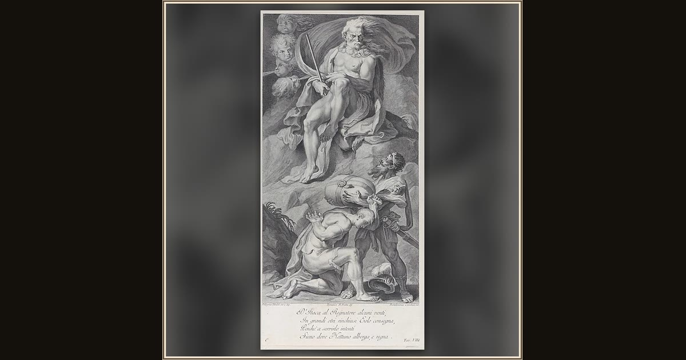

Plate 8: Ulysses receiving the winds in a leather bag from Aeolus
Bartolomeo Crivellari · 1756 · The Metropolitan Museum of Art · New York, USA
King Aeolus hands Odysseus a great leather bag with every stormy wind tied up inside — a gift meant to blow his ships gently home. Explore its place in Book X of the Odyssey.